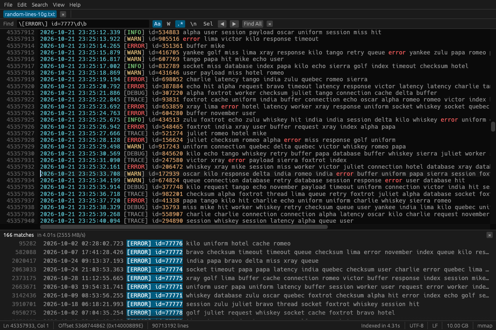
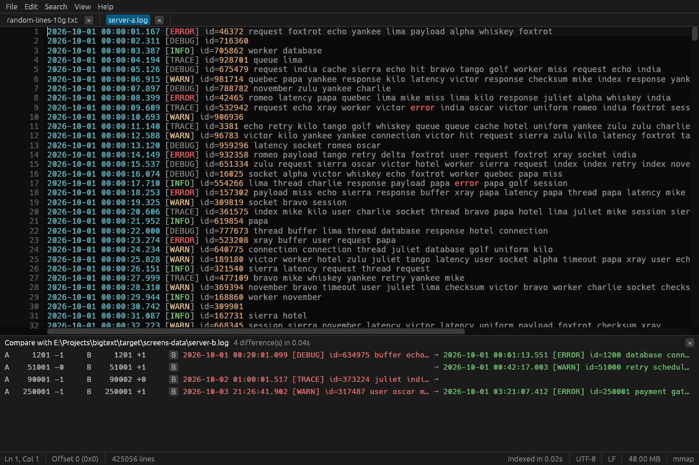
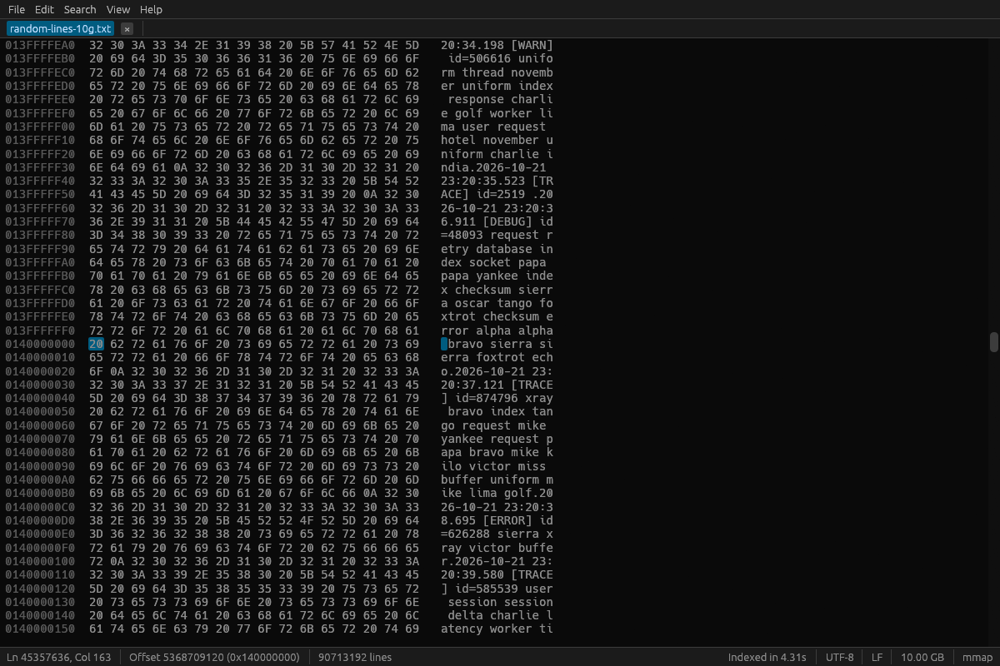
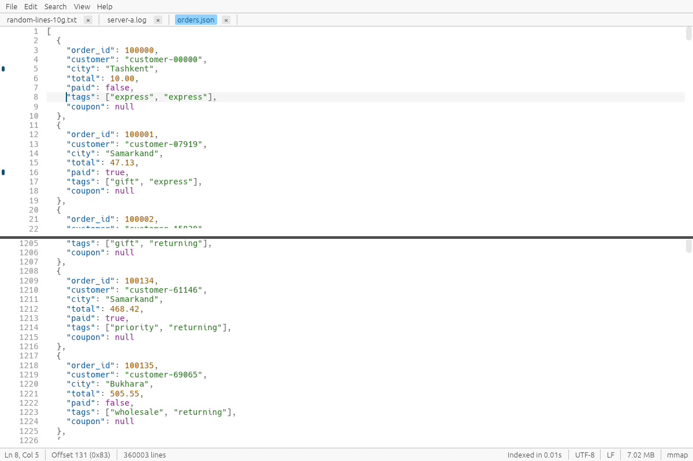

打开任意大小的文件
只通过内存映射窗口读取可见部分。其余部分在后台流式处理；网络或 USB 驱动器会改用带缓存的分块读取，慢速磁盘永远不会卡住窗口。
免费开源，支持 Windows、Linux 和 macOS。无论文件多大，都不卡顿、不等待。
BigText 是一款为日志文件、CSV 导出、数据库转储以及任何普通编辑器打不开的大文件而生的编辑器，也是 EmEditor 和 UltraEdit 的免费替代品。它从不把整个文件载入内存：10 GB 的日志几毫秒即可打开，只占用约 100 MB 内存。
Windows · Linux · macOS · MIT 许可证 · 用 Rust 编写
专为日志、CSV 和 SQL 转储、JSON 导出，以及任何让其他编辑器卡死的文本文件而打造。
只通过内存映射窗口读取可见部分。其余部分在后台流式处理；网络或 USB 驱动器会改用带缓存的分块读取，慢速磁盘永远不会卡住窗口。
稀疏行索引（每 64 KB 占 8 字节）在后台以 2.5 GB/s 构建。即使索引尚未完成，转到行和滚动条也能立即使用。
纯文本搜索达 2.5 GB/s，正则表达式以线性时间运行，支持区分大小写、全字匹配和多行选项。“查找全部”最多列出一百万条结果；F3 立即可用。
支持 $1 和命名分组替换。5 万处以内的修改是一次可撤销的编辑；更大的任务会流式写入新文件：在 10 GB 文件中替换 2200 万处耗时 11 秒，占用 46 MB 内存。
输入、剪切、复制、粘贴、撤销与重做、复制或删除行、自动缩进，全部基于 piece table，因此在保存之前编辑不会重写文件。
保存时先写入临时文件并刷入磁盘，再原子地替换原文件。崩溃或断电都不会留下写了一半的文件。可选 .bak 备份。
自动识别 UTF-8、UTF-16 LE/BE、Windows-1251、Windows-1252 和 ISO-8859-1；LF、CRLF 和 CR 换行符可保留或转换。二进制文件以十六进制视图打开。
跟踪模式（类似 tail -f）用于不断增长的日志，支持日志、JSON、XML、CSV、SQL 和 INI 的语法高亮，还有书签和同一文件的拆分视图。
以流式方式逐行比较两个数 GB 的文件：1 GB 对 1 GB 仅需 0.6 秒，内存约 2 MB。点击某处差异即可跳转。
只显示匹配的行或只显示不匹配的行，就像对整个文件运行 grep，并可保存到新文件。用不同颜色标出 ERROR 等模式，并在滚动条上看到匹配集中的位置。
输入 14:32:05，即可跳到该时间的第一条日志：二分查找只需读取 50 GB 日志中的几百 KB。选中几行即可查看它们之间的时间间隔。
直接打开 .gz 和 .zst 文件，把命令输出通过管道交给 BigText（journalctl -f | bigtext -），或在命令行中用 app.log:120 打开到指定行。
CSV 和 TSV 文件以表格打开，滚动起来和文本一样快。可按列排序、查看列统计、按列筛选，以及重命名、移动、导出或删除列。
排序、去重和反转行，转换大小写，去除空白，格式化或压缩 JSON，并可通过 Alt+拖动进行列选择，一次编辑多行。
命令面板（Ctrl+Shift+P）、可自定义的快捷键、任意等宽字体，以及英语、俄语、乌兹别克语、中文、西班牙语、葡萄牙语、德语或土耳其语界面。
带 ERROR、WARN、INFO 和 DEBUG 筛选的级别栏，F8 跳到下一个错误，时间直方图、日志字段、消息模式、高频值、时间空档，以及每个匹配周围或带有相同请求 ID 的行。
把多个日志按时间戳合并为一个带颜色的视图，或对齐已打开的日志并按时间同步滚动，时钟偏差可调。跟踪模式能挺过日志轮转。
结构面板、状态栏中显示光标处的 JSON 路径、折叠、以表格查看 JSON Lines 并查询、能指出错误位置的严格校验、JSON、JSON Lines 与 logfmt 之间的转换，以及结构化比较。
分组求和、数据透视表、按键连接两个文件、计算列、列图表、冻结和隐藏列、行校验，以及导出为 JSON、Markdown 或 Excel。
并排或统一 diff 格式，上一处和下一处差异，忽略空白、大小写或时间戳，只在一个文件中出现的行，按键比较 CSV，以及应用补丁。
zip 和 tar 压缩包中的文件、边解压边显示的 .xz 和 .bz2 文件、直接保存为 .gz 或 .zst、多光标、列编辑器，以及对任意大小的文件排序、去重或运行任意命令。
以“文件:行”格式搜索整个文件夹，并在脚本中用 bigtext-cli 执行 count、head、tail、slice、replace、CSV 工具和 JSON 输出。支持会话、便携模式，再次启动会在已运行的窗口中打开。
高对比度和色盲友好主题、界面缩放、屏幕阅读器支持、禅模式、带标尺的按列换行、可点击的状态栏，以及为每个文件记住的设置。
为 Python、JavaScript、TypeScript、Java、C#、C/C++、Go、Rust、PHP、Shell 脚本、YAML 等提供 One Dark、Monokai、GitHub 或 Solarized 配色的语法高亮；类似 Sublime Text 的文件夹侧边栏；Ctrl+P 查找文件，Ctrl+R 列出文件中的函数和类，Ctrl+/ 注释行，括号自动闭合。只给屏幕上的行着色，所以超大文件依旧飞快。
用你的密钥通过 SSH 打开 user@server:/var/log/app.log，或像 tail -F 一样跟踪它的最后几 MB。https:// 和公开的 s3:// 文件会显示下载进度。




普通编辑器要先读完整个文件才显示内容。BigText 只读取屏幕上的部分，其余工作都在后台线程完成，因此窗口响应时间不到 3 毫秒。
文件以 256 MB 的窗口映射，只有你正在看的字节才会被访问。搜索、建索引和保存使用各自独立的流式读取。
每 64 KB 一个 8 字节的检查点：50 GB 文件只需 8 MB 索引。检查点之间的行位置按需用 SIMD 计算。
编辑以小片段的形式记录在原文件之上，因此在 50 GB 文件中插入一行只需几个字节，撤销也是瞬间完成。
在原文件旁写入临时文件，执行 fsync，再原子替换（在 Windows 上使用 ReplaceFileW，保留属性和权限）。
在 Windows 11 上用 1 GB、10 GB 和 50 GB 测试文件运行内置基准测试的结果。方法和完整结果见 README。 README
| 任务 | 结果 |
|---|---|
| 打开 → 显示第一屏文本（1–50 GB） | 41–46 ms |
| 在 50 GB 文件中跳到某一行 | 不到 1 ms |
| 构建行索引 | 2.2–2.7 GB/s（50 GB 约 20 秒） |
| 纯文本搜索 | 2.4–2.5 GB/s |
| 正则搜索 | 含字面部分时 2.3–2.8 GB/s，不含时 672 MB/s |
| 在 10 GB 文件中全部替换 | 11.3 秒，峰值内存 46 MB |
| 打开 50 GB 文件时的内存 | 107 MB |
| 启动 → 第一帧 | 159–185 ms |
个人和商业用途均免费。无需账号，没有遥测，只有一个可执行文件。
安装版带“打开方式”和资源管理器右键菜单，另有便携版。程序未签名：如果 SmartScreen 弹出提示，请选择“更多信息”→“仍要运行”。
可在大多数发行版上运行的 AppImage、适用于 Debian 和 Ubuntu 的 .deb 包，或便携的 .tar.gz。
适用于 Apple Silicon 和 Intel 的 BigText.app。应用未签名：首次启动时请右键 → 打开。
Windows，使用 Scoop：
scoop bucket add bigtext https://github.com/Erkinbek/scoop-bigtext
scoop install bigtext/bigtextmacOS 和 Linux，使用 Homebrew：命令行版本，或用 --cask 安装应用：
brew install erkinbek/tap/bigtext
brew install --cask erkinbek/tap/bigtext-app从 rustup.rs 安装 Rust，然后运行：
cargo install bigtext或从源代码构建：
git clone https://github.com/Erkinbek/bigtext.git
cd bigtext
cargo build --release安装 BigText，然后通过“文件 → 打开”、把文件拖到窗口上，或右键 →“Open with BigText”打开。无论文件多大，第一屏都在约 40 毫秒内出现；行索引在后台构建时，滚动和转到行都可以使用。
就大文件而言，是的。和它们一样，BigText 打开数 GB 的文件时不会载入内存，并能搜索、编辑和保存；与它们不同的是，它免费开源，可在 Windows、Linux 和 macOS 上运行。它没有宏和插件：精力全部放在超大文件、日志和表格上。
不会。它只映射屏幕上的部分，其余全部在后台流式处理。打开 50 GB 文件时约占 107 MB 内存，其中大部分用于界面本身。
可以。编辑记录在原文件之上的 piece table 中，所以无论文件多大，输入都是即时的。保存时结果先流式写入临时文件，再原子替换原文件，即使出错原文件也不会损坏。
纯文本搜索速度为 2.4–2.5 GB/s，常见正则表达式为 2.3–2.8 GB/s，因此搜索 10 GB 日志约需 4 秒。F3 无需等待完整搜索，立即找到下一处匹配。
能。“视图 → 跟踪”让视图停留在文件末尾，并在新行到达时为其建立索引。BigText 还会发现文件在磁盘上被修改，并提示重新加载。
能。超过 64 KB 的行会软换行显示，即使是一行 2 GB 的内容也能流畅滚动。
UTF-8、UTF-16 LE/BE（带或不带 BOM）、Windows-1251、Windows-1252 和 ISO-8859-1，自动识别，并可通过“文件 → 按编码重新打开”切换。LF、CRLF、CR 及混合换行符都能识别，并可在保存时转换。
BigText 免费开源，采用 MIT 许可证。Windows 10 和 11 是主要且经过完整测试的平台；Linux 和 macOS（Apple Silicon 和 Intel）版本在每次改动时由 CI 构建和测试。